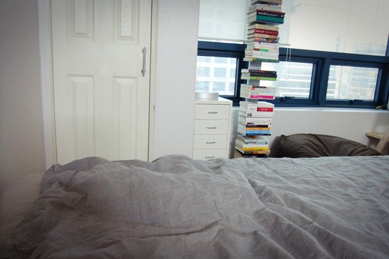

이사를 마쳤다. 근데 집이 좀 춥다. 관리비가 제법 나온다고 해서 보일러도 낮춰 놓고 있었는데, 문득 둘러보니 간장이 사라져 보이질 않는다. 야옹야옹 소리 내며 이리저리 찾다가 침대 위 낯선 언덕 하나가 눈에 띄었다. 아하, 저것은 간장의 언덕이로군. 자진해서 이불 속으로 기어들어가는 건 처음 봤는데, 4월 답지 않은 쌀쌀한 날씨가 드문 풍경을 만들어 주었다.
난 네가 단숨에 이불을 박차고 나오게 할 방법을 알고 있다.
그것은...